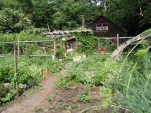

| Changes | |||||||||||||
| More Space After four years in an apartment, I bought a small house with more space for gardens. Having a permanent home I planted fruit trees, (apple, pear, peach), asparagus, blueberries, strawberries, raspberries, rhubarb and many perennial flowers. The entire yard became a garden! I voraciously read Prevention and Organic Gardening magazines, and books published by Rodale Press. |
|||||||||||||
|  | |||||||||||||
| Food Co-ops Living in a college area, there were alternative options to buy food… food cooperatives. I had never heard of co-ops before! An alternative to traditional businesses, co-ops are cooperatively owned by the members, and also purchase locally grown food and food products to sell. The Yellow Sun food co-op in Amherst, Massachusetts was nestled behind the main street in a basement shop. Aisles were filled with a wide variety of foods. Then came the chickens… (see chickens and farm stories, New Chickens, Momma Hen, Ms, Goldie) |
|||||||||||||
| Dark Cloud I found my health declining over the years in Western Massachusetts. Living in a cleaner environment than Chicago, growing a lot of my own food, and buying organic food I did not raise, I did not understand what this “dark cloud” was that was stealing my health. In 1994, after computerizing my graphic arts business, I got very sick. (full story at my website www.healthbrochures.info/mercury) After searching 1-1/2 years, I found information that the electromagnetic fields from my computer monitor were causing a lot more mercury to be released from my mercury amalgam dental fillings. I had mercury fillings for 35 years, beginning at the age of ten. A mercury-free dentist replaced all my mercury amalgam fillings with safer composites. |
|||||||||||||
| A Light in the Dark… Weston A. Price, DDS The next step after removing the mercury dental fillings from my body was to restore my health. I heard about the book, Nutrition and Physical Degeneration by Weston. A Price, DDS, which totally change my life. In the 1930s, Dr. Price visited traditional cultures around the world. He found those cultures still eating traditional foods were healthy. When they began to eat processed foods, such as white sugar and white flour, their health degenerated. (see PDF download of Price brochure) My health began to improve. To feel good, I also had to avoid exposures to wood smoke, fragrances, gas cook stoves, car exhaust, paint, carpeting, chemicals, pesticides… During the twenty-five years we lived in the “Happy Valley” My husband and I moved to midcoast Maine in 2006. |
|||||||||||||
| Starting again in Maine We bought a home that I could tolerate. It had a dry basement (no mold), wood floors (no carpets) and almost no fragrance. Vinyl flooring was removed and gas appliances replaced with electric. After several years, we added “clean” (no combustion) heat pumps for heating, powered by solar panels. We have more growing areas, so planning and starting a new garden and raising animals was fun. (see garden) |
|||||||||||||